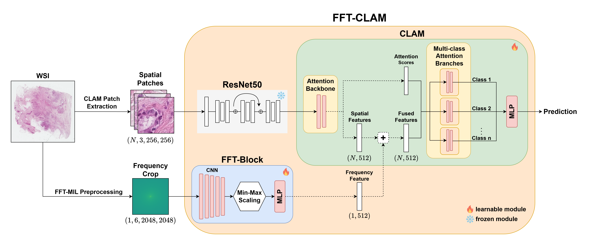
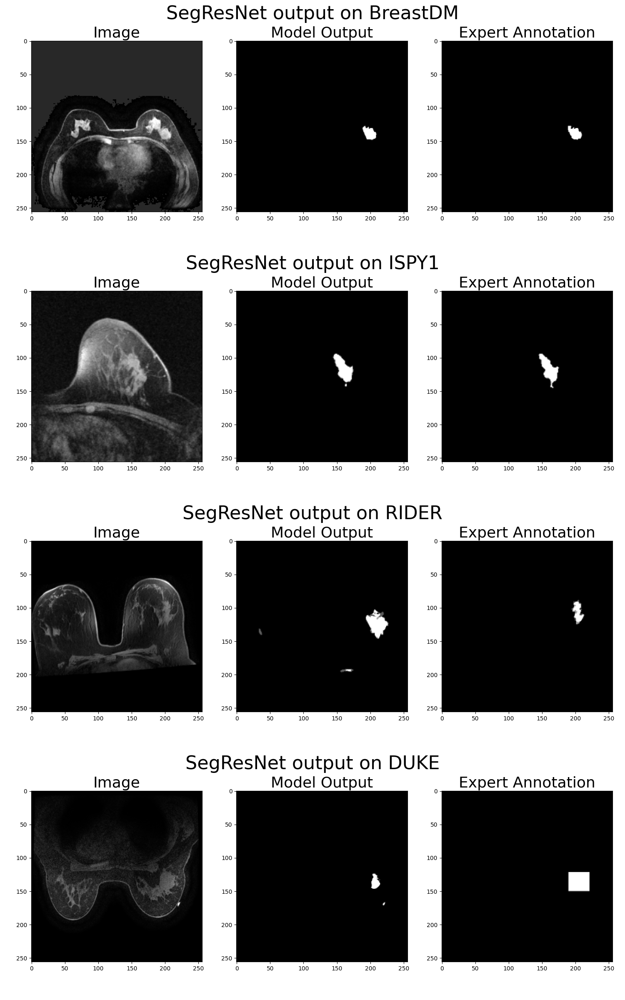
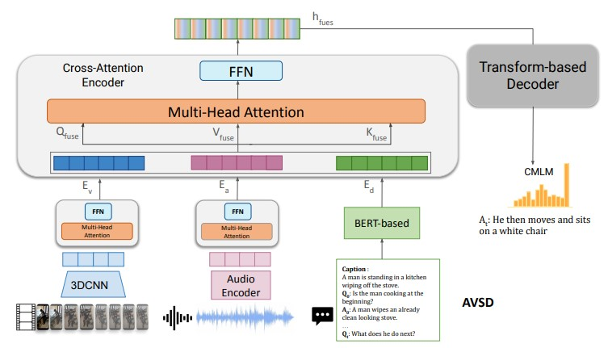

|
Ph.D. student in Computer Science at the University of Central Florida under Chen Chen and Lotzi Bölöni . I received my B.S. in CS from the University of California, Irvine, in 2018 and my M.S. in CS from the Georgia Institute of Technology in 2022—special thanks to Professor Irfan Essa for his support. Email / Google Scholar / Linkedin / Github |
|
|
My primary duties included supporting software projects and creating distributed and orchestrated internal cloud services. In addition, I supported multiple machine learning projects and prototyped an image generation approach with a generative adversarial network (GAN). Technical details can be found on my Linkedin. |
|  |
Anthony Bilic, Guangyu Sun, Ming Li, Md Sanzid Bin Hossain, Yu Tian, Wei Zhang, Laura Brattain, Dexter Hadley, Chen Chen Journal of Medical Imaging, 2025 Whole Slide Image (WSI) classification relies on Multiple Instance Learning (MIL) with spatial patch features, yet existing methods struggle to capture global dependencies due to the immense size of WSIs and the local nature of patch embeddings. This limitation hinders the modeling of coarse structures essential for robust diagnostic prediction. We propose Fourier Transform Multiple Instance Learning (FFT-MIL), a framework that augments MIL with a frequency-domain branch to provide compact global context. Low-frequency crops are extracted from WSIs via the Fast Fourier Transform and processed through a modular FFT-Block composed of convolutional layers and Min-Max normalization to mitigate the high variance of frequency data. The learned global frequency feature is fused with spatial patch features through lightweight integration strategies, enabling compatibility with diverse MIL architectures. Code publicly available at https://github.com/irulenot/FFT-MIL. |
|  |
Anthony Bilic, Chen Chen IEEE ICHI Multimodal4healthcare Workshop, 2024 Binary breast cancer tumor segmentation with Magnetic Resonance Imaging (MRI) data is typically trained and evaluated on private medical data, which makes comparing deep learning approaches difficult. We propose a benchmark (BC-MRI-SEG) for binary breast cancer tumor segmentation based on publicly available MRI datasets. The benchmark consists of four datasets in total, where two datasets are used for supervised training and evaluation, and two are used for zero-shot evaluation. Additionally we compare state-of-the-art (SOTA) approaches on our benchmark and provide an exhaustive list of available public breast cancer MRI datasets. The source code has been made available at https://irulenot.github.io/BC_MRI_SEG_ Benchmark/. |
|  |
Huda Alamri, Anthony Bilic, Michael Hu, Apoorva Beedu, Irfan Essa NeurIPS Workshop, 2022 Proposes a new framework that combines 3D-CNN network and transformer-based networks into a single visual encoder to extract more robust semantic representations from videos. The visual encoder is jointly trained end-to-end with other input modalities, such as text and audio. Experiments on the AVSD task show significant improvement over baselines in both generative and retrieval tasks. |
|
Feel free to steal this website's source code. Do not scrape the HTML from this page itself, as it includes analytics tags that you do not want on your own website — use the github code instead. Also, consider using Leonid Keselman's Jekyll fork of this page. |